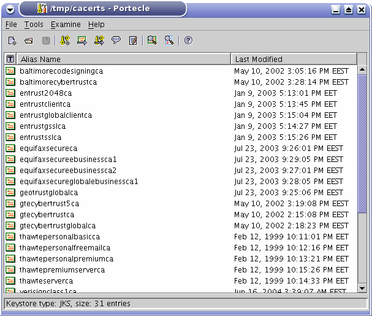

Portecle has a simple interface which provides access to a KeyStore either by loading it from a file or by creating it from scratch:

KeyStore files can be created, opened and saved via the File menu.
The contents of Certificate and CRL files can be examined through use of the options on the Examine menu.
General KeyStore maintenance operations are accessible through the Tools menu. These general operations include the capability to examine the content of certificate files, to import trusted certificates, to generate key pairs and change KeyStore type.
Most of the operations found in the File, Examine and Tools menus are also available on the tool bar. Most operations also have shortcut keys.
The entries contained within a loaded KeyStore are displayed in the KeyStore entry table which has columns for:
Operations specific to a KeyStore entry can be accessed by right-clicking on the particular entry in the table and selecting the required operation from the resultant pop-up menu. The options available in the pop-up menu differ depending on the KeyStore entry type. For example Trusted Certificate entries can be examined, deleted or renamed. Key Pair entries can additionally have their passwords set, be used to generate CSRs, etc. Key entries, on the other hand, have no specific operations and therefore no menu will appear for them.